tm_scale_intervals(values = "brewer.blues") # palette name: series.name
tm_scale_intervals(values = "blues") # name without series
tm_scale_intervals(values = "-brewer.blues") # "-" reverses the palette
tm_scale_intervals(values = c("white", "orange", "red")) # own colorsAdvanced Static Cartography in R
Session 3: Color palettes
Martijn Tennekes
Why color matters
Color is the most used map variable
- Choropleths, raster maps, categorical maps, symbol fills, line colors…
- A palette can reveal or hide patterns
- A palette can suggest an order that is not there (or hide one that is)
- Around 8% of males and 0.5% of females have a color vision deficiency (CVD)
Palette types
Categorical — unordered categories
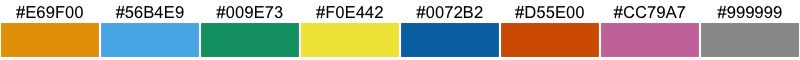
Sequential — ordered values
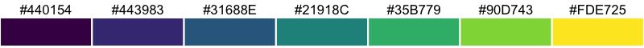
Diverging — ordered values with a meaningful midpoint
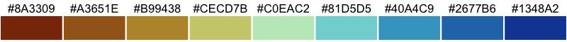
Bivariate — two variables (session 4)
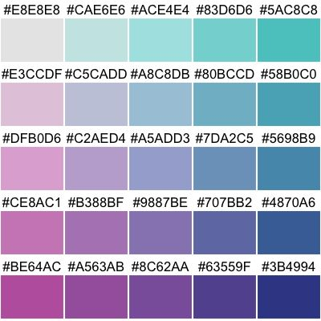
Which palette type?
| Data | Palette type | Example |
|---|---|---|
| Categories without order | categorical | land cover, economy type |
| Ordered, one direction | sequential | population density, income |
| Ordered, with meaningful midpoint | diverging | change (−/+), deviation from average |
| Cyclic (first color = last color) | cyclic | month, hour, direction |
| Two variables | bivariate | income × education |
Palettes in tmap
Specifying palettes: values
The values argument of the scale function:
- Palette names are from cols4all (e.g.
"brewer.blues","scico.hawaii","tol.rainbow_wh_br") - Without
values, a default palette is chosen depending on the data (seetmap_options("values.var"))
Default palettes
Default palettes
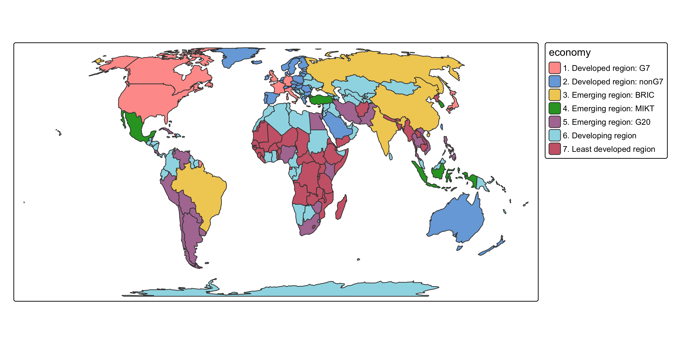
Sequential
Sequential
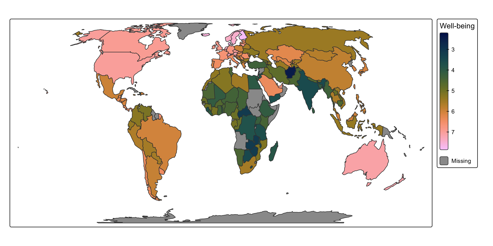
Diverging: set the midpoint
The midpoint is the data value mapped to the middle (neutral) color.
Diverging: set the midpoint
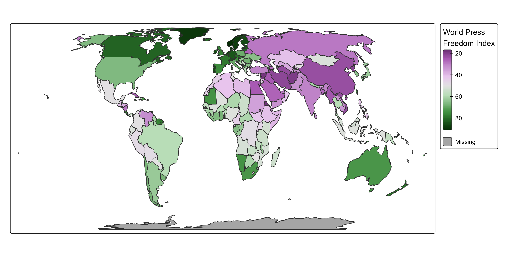
Using part of a palette: values.range
values.range = c(0.2, 1) skips the lightest 20% of the palette, e.g. to keep contrast with a white background.
Using part of a palette: values.range
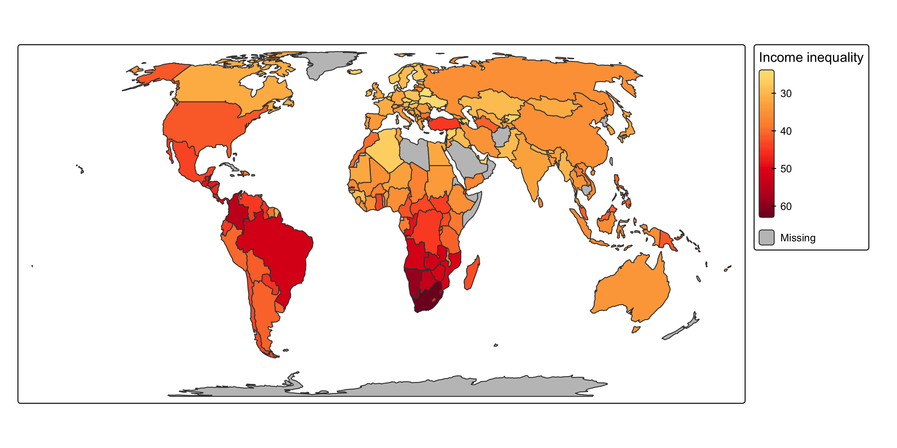
Missing values: value.na
Choose a missing value color that cannot be confused with any palette color.
Missing values: value.na
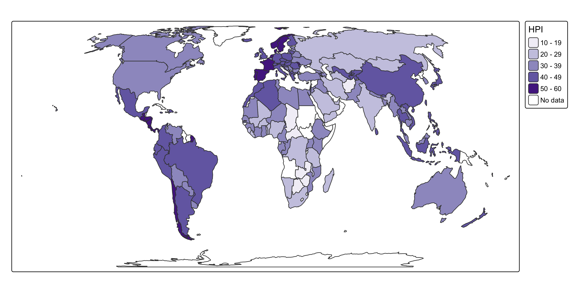
Categorical and ordinal scales
tm_scale_categorical() for unordered categories (e.g. "economy"), tm_scale_ordinal() for ordered ones.
Categorical and ordinal scales
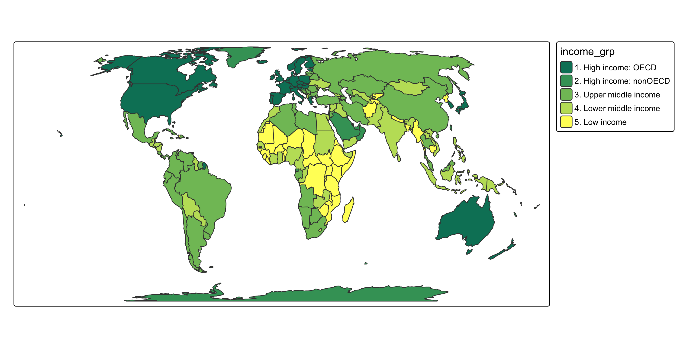
Categorical: number of colors
- Categorical palettes work well up to about 7-9 colors
- Beyond that, colors become hard to distinguish, especially for small objects (points, lines)
- Consider merging categories, highlighting a few, or using facets
Categorical: number of colors
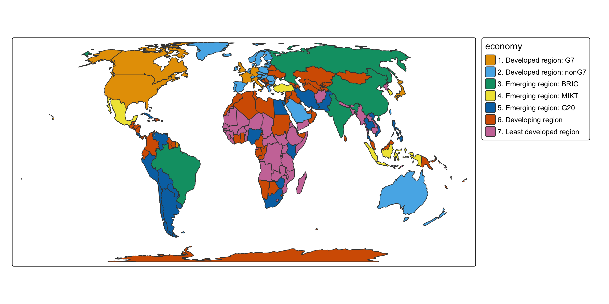
Analysing palettes with cols4all
cols4all
- An R package to analyse and compare color palettes
- Hundreds of palettes from many series: ColorBrewer, HCL, scico, viridis/matplotlib, Paul Tol, Tableau, …
- Scores on: color-blind friendliness, fairness, contrast, vividness, hues
- Also for your own (corporate) palettes
- The palettes are used by tmap, and can also be used in ggplot2 or anywhere else
The cols4all dashboard
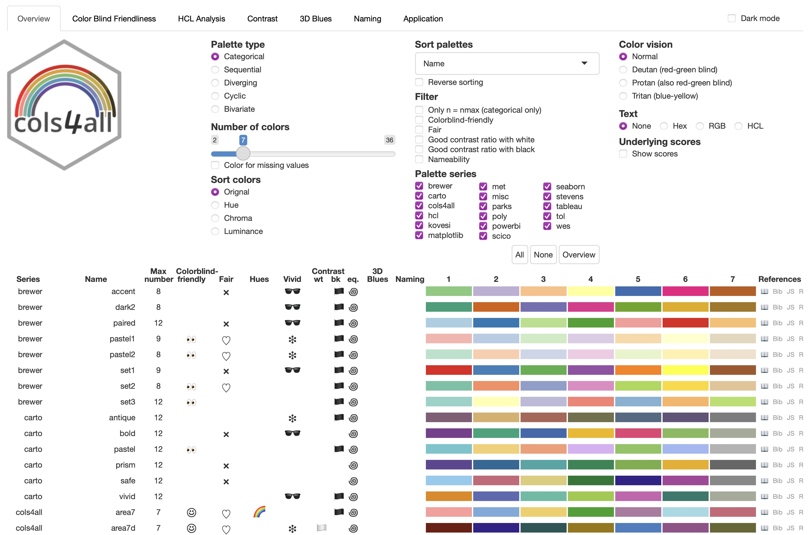
Getting colors
[1] "#EFF3FF" "#BDD7E7" "#6BAED6" "#3182BD" "#08519C"[1] "#08519C" "#3182BD" "#6BAED6" "#BDD7E7" "#EFF3FF"[1] "#B6D4E9" "#73B2D7" "#3B8BC2" "#125FA7" "#08306B"[1] "brewer.br_bg" "brewer.pi_yg" "brewer.prgn" "brewer.pu_or"
[5] "brewer.rd_bu" "brewer.rd_gy" "brewer.rd_yl_bu" "brewer.rd_yl_gn"
[9] "brewer.spectral"Plotting palettes
With include.cvd = TRUE, simulated colors are shown for deuteranopia, protanopia and tritanopia.
Plotting palettes
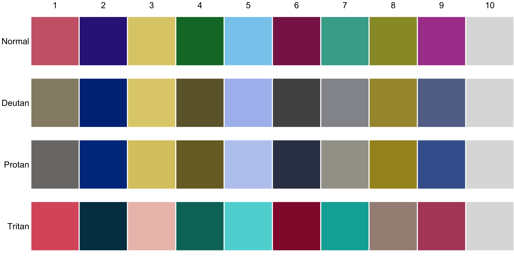
Palette properties
Color vision deficiency
- People with CVD lack (at least) one of the three types of cone cells
- Deuteranopia / protanopia (missing medium/green resp. long/red cones): difficulty distinguishing red and green
- Tritanopia (missing short/blue cones): difficulty distinguishing blue and yellow
- cols4all measures the minimal perceived distance between palette colors, for normal vision and each of the CVD types
Color-blind friendliness in the dashboard
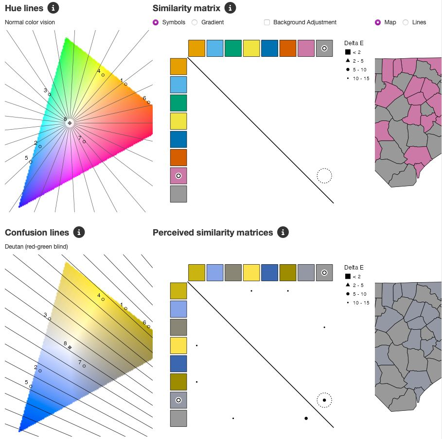
Color blind friendliness analysis of misc.okabe: a minor issue with pink and grey for deutans.
Simulating CVD on a map
pal = c4a("brewer.rd_yl_gn", n = 7)
tmap_arrange(
tm_shape(World) +
tm_polygons("HPI", fill.scale = tm_scale_intervals(n = 7, values = pal)) +
tm_crs("auto") + tm_title("Normal vision"),
tm_shape(World) +
tm_polygons("HPI", fill.scale = tm_scale_intervals(n = 7, values = colorspace::deutan(pal))) +
tm_crs("auto") + tm_title("Simulated deuteranopia"),
ncol = 2)Simulating CVD on a map
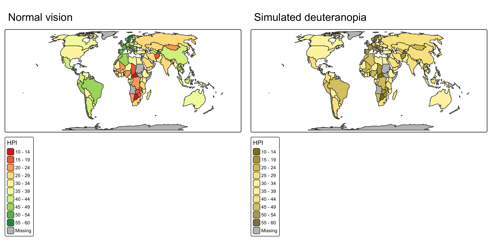
A color-blind friendly alternative
pal = c4a("pu_gn_div", n = 7)
tmap_arrange(
tm_shape(World) +
tm_polygons("HPI", fill.scale = tm_scale_intervals(n = 7, values = pal)) +
tm_crs("auto") + tm_title("Normal vision"),
tm_shape(World) +
tm_polygons("HPI", fill.scale = tm_scale_intervals(n = 7, values = colorspace::deutan(pal))) +
tm_crs("auto") + tm_title("Simulated deuteranopia"),
ncol = 2)A color-blind friendly alternative
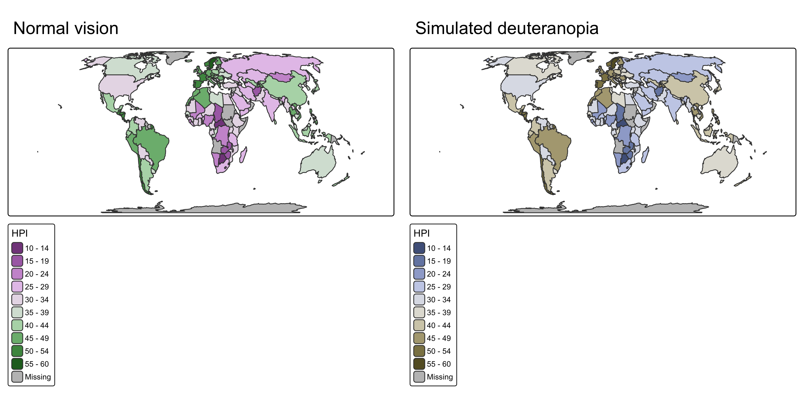
Rainbow palettes
- Rainbow palettes (wide range of hues) are popular but often problematic:
- usually not color-blind friendly
- no natural order in hue: the order must be learned from the legend
- uneven perceptual steps create artificial boundaries
- If you want many hues: choose a color-blind friendly rainbow-like palette, such as
"tol.rainbow_wh_br"or"scico.batlow"
Rainbow compared
Rainbow compared
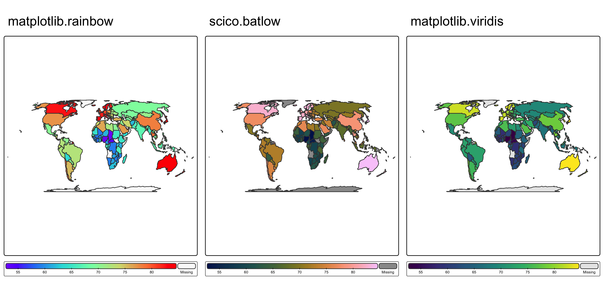
Fairness
- A palette is fair if all colors stand out about equally
- Important for categorical palettes: no category should dominate unintentionally (unless deliberately highlighted)
- Based on the ranges of luminance (L) and chroma (C) of the palette colors
- cols4all score from 0 to 100: fair (≥ 75), unfair (< 25)
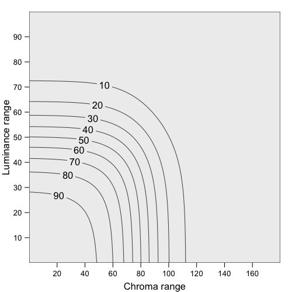
Vividness
- Highly saturated colors can cause visual fatigue
- Low-saturated (pastel) colors are recommended for space-filling visualizations such as choropleths
- Save vivid colors for small objects (points, lines) or for highlighting
Contrast
- Contrast ratio: difference in brightness of two colors, from 1:1 to 21:1
- WCAG 2.2: 3:1 minimum for informational non-text elements against the background and adjacent colors
- Relevant for maps:
- fill colors vs. border lines (black or white)
- fill colors vs. background (white or a basemap)
- fill colors vs. text labels on top
Contrast with borders
tmap_arrange(
tm_shape(NLD_muni) +
tm_polygons("income_high", col = "black",
fill.scale = tm_scale_intervals(values = "brewer.blues")) +
tm_title("A. black borders"),
tm_shape(NLD_muni) +
tm_polygons("income_high", col = "black",
fill.scale = tm_scale_intervals(values = "brewer.blues", values.range = c(0, 0.6))) +
tm_title("B. black borders, lighter palette"),
tm_shape(NLD_muni) +
tm_polygons("income_high", col = "white", lwd = 0.5,
fill.scale = tm_scale_intervals(values = "brewer.blues")) +
tm_title("C. white borders"),
ncol = 3)Contrast with borders
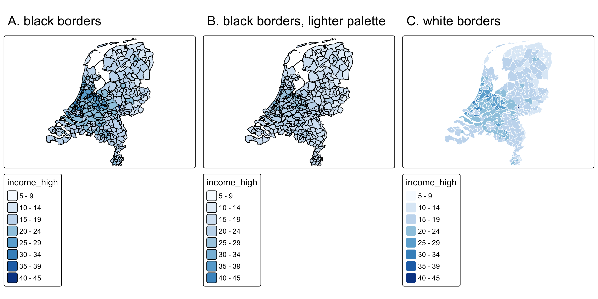
Contrast with borders: lessons
- A: in the dark classes, the black borders hardly contrast with the fill; dense areas (the Randstad) become dark blobs
- B: restricting the palette to its lighter part restores the contrast, but the classes are harder to tell apart
- C: thin white borders contrast with the dark classes and recede in the light ones: the borders stay subordinate (visual hierarchy, session 2)
For many small polygons, C is preferred. Black borders (or B) suit maps with a few large polygons, where the borders themselves carry information.
Contrast with text labels
Labels over dark colors need a light font, labels over light colors a dark font. Two solutions:
- A halo or background (
opt_tm_text(halo = TRUE),bgcol) - A precomputed color variable, passed as-is:
Africa = World[World$continent == "Africa", ]
Africa$font_col = ifelse(is.na(Africa$press) |
(Africa$press > 30 & Africa$press < 65), "black", "white")
tm_shape(Africa) +
tm_polygons("press",
fill.scale = tm_scale_continuous(values = "pu_gn_div", midpoint = 50),
fill.legend = tm_legend("Press freedom")) +
tm_text(text = "name", size = 0.6,
col = "font_col",
col.scale = tm_scale_asis()) +
tm_crs("auto")This technique is also used in the Dorling cartogram in session 8.
Contrast with text labels
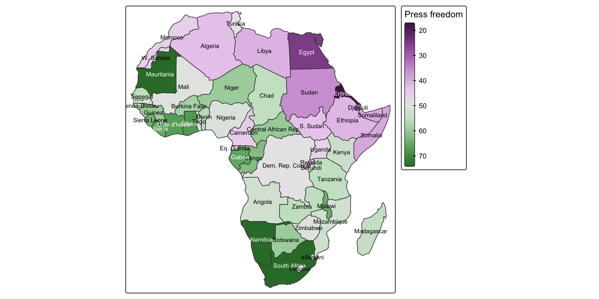
Designing palettes
Guidelines
- Sequential: luminance should change monotonically (light → dark); single or few hues is safest
- Diverging: two sequential wings with a light, neutral midpoint; the wings should differ in hue (not red/green!)
- Categorical: distinct hues, similar luminance and chroma (fair), unless you want to highlight
- Test your own palette in cols4all:
c4a_gui()also analyses custom palettes
Custom palettes
Deliberately unfair: one category is highlighted.
Custom palettes
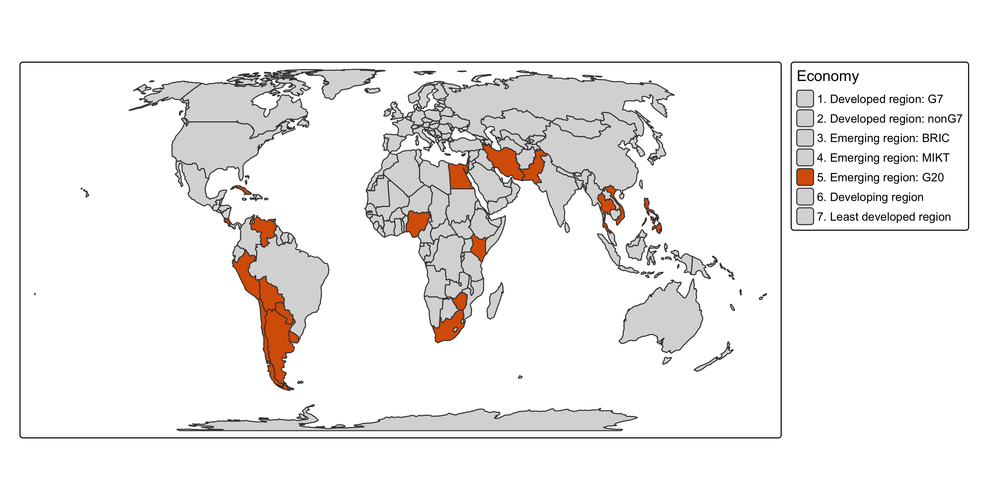
Palette with semantics
Some variables have conventional colors: water is blue, forest green, …
land contains a color table, which is used by default.
Palette with semantics
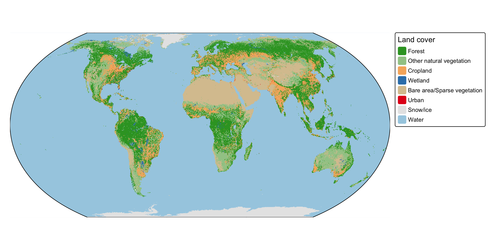
Recap
- Choose the palette type from the data: categorical, sequential, diverging, cyclic, bivariate
- In tmap:
valuesin the scale function;"-"reverses;midpoint,values.range,value.na - Use cols4all (
c4a_gui()) to analyse palettes:- color-blind friendliness, fairness, vividness, contrast, hues
- Avoid classic rainbow and red-green palettes; prefer pastel colors for large areas
- Check contrast with borders, background and labels
- Further reading: cols4all | cols4all paper | scales in tmap